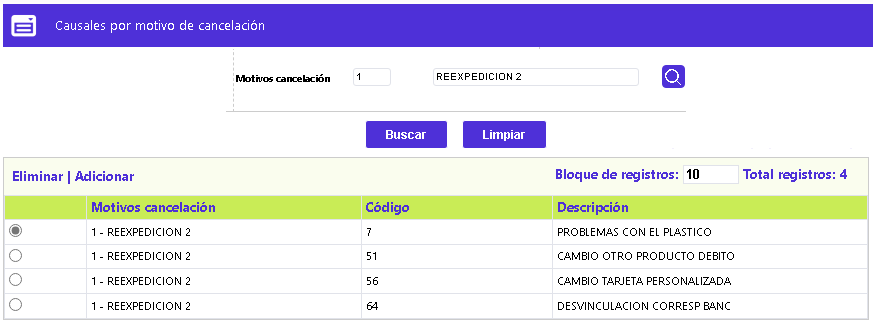
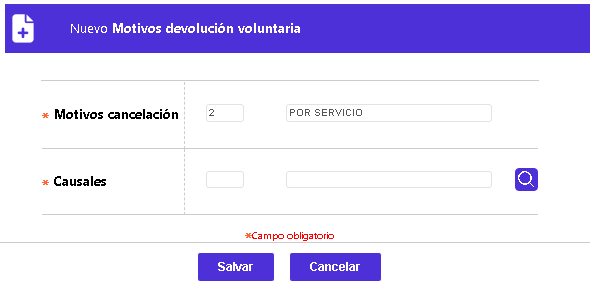

Causales por Motivos Cancelación
Esta función habilita la consulta y mantenimiento de las agrupaciones de los diversos motivos de devolución con las causales que se requiera que se encuentren relacionadas. El formulario contiene los enlaces: Eliminar y Adicionar.

|
Motivos Cancelación |
Muestra el código asignado al motivo de devolución y que se encuentra consignado el la forma de Causales motivo devolución. |
Adicionar: Al activar ese enlace se despliega el siguiente formulario, en el que, para poder agregar un registro, es necesario primero utilizar el filtro:

|
Motivos Cancelación |
Campo de salida que muestra el código y nombre del motivo de cancelación, para el que se va a indicar una de las causales de devolución. |
|
Causales |
ampo obligatorio que posee lista de valores poblada en la opción Motivos de devolución voluntaria de la que debe seleccionarse la causal que se quiera asociar al motivo de devolución. |